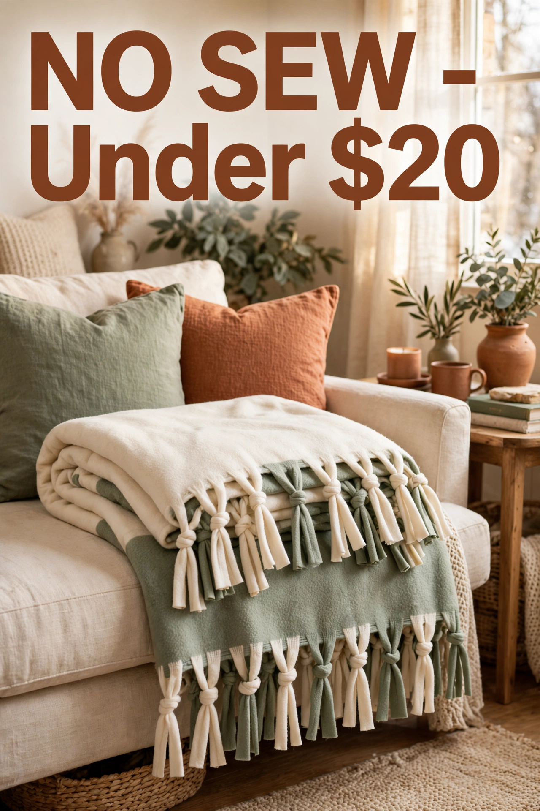

DIY Gifts Beginner DIY Projects
Cozy No-Sew Fleece Blanket (Under $20, 1 Hour)

A no-sew fleece blanket is the coziest beginner project I know. You take two pieces of fleece, lay them together, cut a fringe around the edges, and tie the fringe in knots. That is all. No sewing machine, no needle, no thread, and no experience needed. One blanket takes about 1 hour, costs under $20, and is warm enough for a winter evening on the sofa.
This is a good project for a first craft, for a handmade Christmas gift, and for a family evening. Kids can help with the tying, and the blanket is useful from the day you finish it. Fleece does not fray, so the edges stay neat, and the blanket washes well, which is why it is a favourite gift for babies, students, and anyone who likes a warm throw. A similar throw in a shop often costs $30 to $50, so you save money and you choose the colours.
How a no-sew fleece blanket works
Fleece is a knit fabric that does not unravel when you cut it, so you can cut a fringe and tie it without hemming. The blanket is two layers: a front and a back, tied together around the edge by the fringe. The fringe is usually 4 inches long and about 1 inch wide, and each top strip is tied to the matching bottom strip in a simple knot. The knots hold the two layers together and make the finished edge. If a knot comes loose, you just tie it again, so there is almost nothing that can go wrong.
The size is up to you. A baby blanket is about 36 by 48 inches, a lap blanket is about 48 by 60 inches, and a full throw is about 60 by 72 inches. Buy 1.5 yards of fleece for a lap blanket, and 2 yards for a full throw, in two colours or patterns that go together. A solid colour on one side and a pattern on the other looks best, because the fringe shows both sides when you tie it.
What you need
- Fleece fabric, 1.5 yards for a lap blanket, 2 yards for a throw, in two pieces — about $8 to $10 each on sale, $16 to $20 total
- Sharp fabric scissors — about $5 if you do not have any, or use the sharpest scissors you own
- A ruler or tape measure — free, or about $2
- Chalk or a washable marker, to mark the fringe — about $2
- A flat table or clean floor, big enough to lay the fleece out flat — free
Buy anti-pill fleece if you can, because it stays soft and does not go bobbly after washing. Check the sale bin at a craft store, because fleece is often half price in winter, and a blanket that costs $20 at full price can cost $10 on sale. Wash the fleece before you start if it feels stiff, and dry it on low heat, so it is soft when you tie it.
Steps
- Lay the fleece flat. Lay the two pieces of fleece on a table or clean floor, wrong sides together, with the pretty sides facing out. Smooth out all the wrinkles and line up the edges. Trim the edges straight with scissors, so both pieces are exactly the same size.
- Cut out the corners. At each corner, cut out a square 4 inches by 4 inches, through both layers at once. This square is the same size as the fringe, so the corner fringe does not end up too long. Keep the cut squares aside for another project, or throw them away.
- Mark the fringe. Along each side, mark strips 1 inch wide and 4 inches deep, with chalk or a washable marker. You can mark every strip, or mark every fourth strip and cut by eye in between. The strips should be even, but a small difference does not show once the blanket is tied.
- Cut the fringe. Cut along the marks, through both layers at once, all the way around the blanket. Cut slowly and keep the scissors straight, so each strip is the same length. Do not cut past the 4 inch mark, or the fringe will be uneven.
- Tie the fringe. Take one top strip and the matching bottom strip together, and tie them in a simple overhand knot, then a second knot on top of it. Pull the knot snug, but not so tight that it puckers the blanket. Work your way around the blanket, tying each pair as you go.
- Check the edges. When you have tied all four sides, lay the blanket flat and check for any strips you missed. Tie any loose strips, and trim any strips that are much longer than the rest. The fringe should look even all the way around.
- Wash and use. Wash the blanket on a gentle cold cycle and dry it on low heat, or hang it to dry. It is ready to use straight away, and it gets softer with the first wash.
Why a no-sew blanket looks uneven
An uneven blanket usually means the two layers shifted while you were cutting, or the fringe strips were different lengths. Pin the layers together with safety pins every 12 inches before you cut, or lay a heavy book on the fleece to hold it still. Cut both layers at the same time, and mark the fringe before you start cutting. If the knots look loose, tie a second knot on each pair. If the blanket puckers at the corners, check that you cut the 4 inch corner squares out first, because skipping that step makes the corners bunch up.
Cost breakdown
Fleece $16 to $20, scissors $5 if you need them, chalk $2. Total about $18 to $20 if you buy fleece on sale and already own scissors, and about $25 if you buy everything new. One lap blanket uses 1.5 yards of each colour, so a full throw costs a little more, about $24. A similar fleece throw in a shop costs $30 to $50, so you save at least $10, and you choose the colours and size.
Tips to save time and money
Buy fleece in the sale bin, or use a coupon, because fleece is often half price in winter. Make two blankets at once, because cutting and tying the second one takes half the time once you know the steps. Use a rotary cutter and a cutting mat if you have them, because they cut the fringe faster and straighter than scissors. Choose a dark colour for one side, because it hides stains, and a light pattern for the other side, because it looks bright on a sofa. Make a matching pillow cover from the leftover fleece, by tying a smaller square the same way.
Common mistakes to avoid
Do not use a stretchy or thin fleece, because it is hard to cut straight and the knots slip. Do not cut the fringe longer than 4 inches, because long fringe tangles in the wash. Do not tie the knots too tight, because they pucker the blanket and make it look lumpy. Do not skip the corner squares, because the corners will bunch up. Do not wash the blanket in hot water, because fleece can shrink and go stiff, so use a cold gentle cycle.
Variations to try
Try a baby blanket in soft pastels, 36 by 48 inches, with a matching hat or booties made from the leftover fleece. Try a pet blanket in a fun print, 24 by 36 inches, for a dog bed or a car seat. Try a double-sided blanket with a Christmas pattern on one side and a solid colour on the other, so you can flip it after Christmas. Try a braided edge instead of knots: cut the fringe, then loop each strip through the next one, for a flat edge that does not tangle. Try adding a pocket on one corner, by sewing or tying a small fleece square to the front, for a phone or a book.
Frequently asked questions
How long does a no-sew fleece blanket last? Years, if you wash it on a cold gentle cycle and dry it on low heat. Anti-pill fleece stays soft the longest. The knots can loosen over time, so just tie them again if they come undone.
Can kids help make it? Yes. Cutting the fringe needs an adult or an older child with sharp scissors, but tying the knots is easy and safe for kids. A child can tie a whole side of the blanket in about 20 minutes.
What size should I make? A lap blanket, 48 by 60 inches, is the most useful size for a sofa. A baby blanket is 36 by 48 inches, and a full throw is 60 by 72 inches. Measure your sofa or bed first, and buy fleece to match.
Does fleece fray? No, fleece does not fray, which is why this project works without sewing. The cut edges stay neat, and the fringe knots hold the two layers together without hemming.
Pin this: Cozy No-Sew Fleece Blanket Under $20 1 Hour